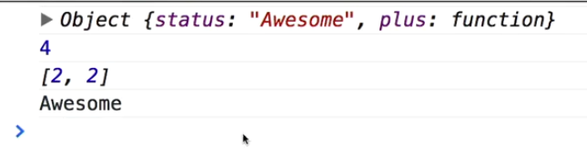

Invoking as a method
A method is nothing more than a function that has been assigned as a property of an object.
This example creates an Object which contains a function.
That function is then invoked using a method.
One of the big advantages of calling functions as a method is that the 'this' keyword gets the value of the Object, which is really useful.
The binding of 'this' happens at invocation time. This means that the 'this' attribute is not going to be bound to that object until you invoke the method.
This makes the function re-useable.
binding functions to objects and using them as methods is a great programming technique.
This returns 4 things.
- The 'this' keyword returns the Object and all parameters.
- 4 is the result of the addition.
- The 'arguments' parameter returns two arguments.
- The 'this' keyword queries the 'status' parameter of the object.
var clac = {
status: 'Awesome',
plus: function(a,b){
return (
console.log(this),
console.log(a+b),
console.log(arguments),
console.log(this.status)
)
}
}
calc.plus(2,2);
